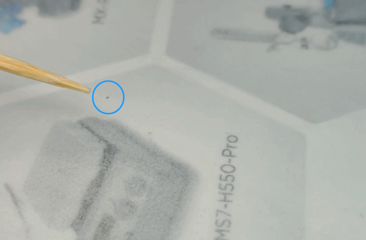

“우리가 해냈다!”…‘초전도체 구현’ 난리 난 중국 [특파원 리포트]
입력 날짜 2023/08/05

중국 연구팀이 구현했다고 주장하는 초전도체 모습 (출처: 빌리빌리)
'꿈의 물질', '물리학계 성배(Holy Grail)' 등 다양한 이름으로 불리고 있는 상온·상압 초전도체(superconductor)
를 두고 전 세계 관심이 쏟아지고 있습니다.
중국도 예외는 아닙니다. 한국 퀀텀에너지 측이 상온·상압에서 초전도체를 만들었다는 내용은 물론 제조 과정, 일종의 '레시피'까지 공개했기 때문인데요. ■초전도체(superconductor)란?…저항 0의 '꿈의 물질'
초전도체란 물질은 저항이 없는 도체, 그래서 전류가 한번 흐르기 시작하면 저항 없이 영원히 흐를 수 있는 물질입니다. 현재까지는 영하 200도와 같은 극저온 환경이나 초고압 환경에서만, 그것도 일부 물질에 한해 초전도체 성질이 발견됐고요. 그래서 수많은 과학자가 그동안 좀 더 높은 온도에서 초전도 특성을 가지는 물질을 만들기 위해 매진해 왔습니다.
또 초전도체는 저항이 0이라는 점 말고도 다른 몇 가지 특징이 있습니다. 대표적인 것이 마이스너(반자성) 효과입니다.
중국도 예외는 아닙니다. 한국 퀀텀에너지 측이 상온·상압에서 초전도체를 만들었다는 내용은 물론 제조 과정, 일종의 '레시피'까지 공개했기 때문인데요. ■초전도체(superconductor)란?…저항 0의 '꿈의 물질'
초전도체란 물질은 저항이 없는 도체, 그래서 전류가 한번 흐르기 시작하면 저항 없이 영원히 흐를 수 있는 물질입니다. 현재까지는 영하 200도와 같은 극저온 환경이나 초고압 환경에서만, 그것도 일부 물질에 한해 초전도체 성질이 발견됐고요. 그래서 수많은 과학자가 그동안 좀 더 높은 온도에서 초전도 특성을 가지는 물질을 만들기 위해 매진해 왔습니다.
또 초전도체는 저항이 0이라는 점 말고도 다른 몇 가지 특징이 있습니다. 대표적인 것이 마이스너(반자성) 효과입니다.

초전도체가 초전류를 형성해 공중에 떠 있는 모습. (출처: 바이두)
마이스너 효과는 외부 자기장이 초전도체 내부에 침투하지 못하는 것을 말하는데요. 초전도체의 경우 외부
자기장이 있으면, 초전도체 내부에 초전류가 형성되면서 반대 방향의 자기장을 만들어 공중에 뜨는 현상을
보입니다. 초전도체 하면 '공중부양' 사진이 많은 이유입니다.
이 밖에 또 다른 특징들이 있지만, 중요한 것은 지금까지는 상온에서 이 물질을 만들 수 없었다는 점, 그리고 만들 수만 있다면 인류가 에너지 산업 등에서 지금까지와는 완전히 다른 역사를 새로 쓰게 된다는 점입니다. 예를 들면 한번 흐른 전류가 저항 없이(손실 없이) 계속 흐르게 된다면 비용 걱정 없이 된더위에 에어컨을 종일 트는 것은 아무것도 아닌 일이 되는 것이죠.
■"이게 되네?"…전 세계 실험실, 재현 나서
그런데 한국의 연구진이 LK-99로 명칭 된 상온·상압 초전도체를 만들었다니 당연히 전 세계는 발칵 뒤집혔습니다. 각종 밈(meme·일종의 인터넷 유행)도 넘쳐나고 있습니다.
이 밖에 또 다른 특징들이 있지만, 중요한 것은 지금까지는 상온에서 이 물질을 만들 수 없었다는 점, 그리고 만들 수만 있다면 인류가 에너지 산업 등에서 지금까지와는 완전히 다른 역사를 새로 쓰게 된다는 점입니다. 예를 들면 한번 흐른 전류가 저항 없이(손실 없이) 계속 흐르게 된다면 비용 걱정 없이 된더위에 에어컨을 종일 트는 것은 아무것도 아닌 일이 되는 것이죠.
■"이게 되네?"…전 세계 실험실, 재현 나서
그런데 한국의 연구진이 LK-99로 명칭 된 상온·상압 초전도체를 만들었다니 당연히 전 세계는 발칵 뒤집혔습니다. 각종 밈(meme·일종의 인터넷 유행)도 넘쳐나고 있습니다.

한국이 LK-99로 지구 온난화를 막을 수 있다는 밈.
현재 전 세계적으로 초전도체 관련 밈이 쏟아지고 있다. (출처: 바이두)
현재 전 세계적으로 초전도체 관련 밈이 쏟아지고 있다. (출처: 바이두)
물론 현재 한국 연구진이 발표한 내용은 제대로 검증을 거치지도 않았고, 초전도 특성을 발현하기도 어렵다는
점 등 때문에 회의적인 시각이 주를 이루고 있습니다.
하지만 초전도체를 만들 수 있는 이른바 '레시피(제조법)'가 공개됐는데, 이걸 안 해 볼 과학자들이 있을까요?
미국의 아르곤국립연구소, 중국 난징대학교, 프랑스 콜레주드프랑스 등 여러 연구 기관에서 LK-99의 재현 실험을 진행 중인 것으로 알려졌습니다. 또 '노벨의 메카'로 불리는 미국 에너지부 산하 로런스버클리국립연구소(LBLN)까지 시뮬레이션을 진행했습니다.
하지만 초전도체를 만들 수 있는 이른바 '레시피(제조법)'가 공개됐는데, 이걸 안 해 볼 과학자들이 있을까요?
미국의 아르곤국립연구소, 중국 난징대학교, 프랑스 콜레주드프랑스 등 여러 연구 기관에서 LK-99의 재현 실험을 진행 중인 것으로 알려졌습니다. 또 '노벨의 메카'로 불리는 미국 에너지부 산하 로런스버클리국립연구소(LBLN)까지 시뮬레이션을 진행했습니다.
■ 제보하기
▷ 카카오톡 : 'MAP제보' 검색, 채널 추가
▷ 전화 : 010-2180-6918
▷ 이메일 : map1234@map.co.kr
▷ 유튜브, 네이버, 카카오에서도 MAP뉴스를 구독해주세요!
 건희기자
건희기자
📧 rlarjsgml6918@gmail.com
▷ 카카오톡 : 'MAP제보' 검색, 채널 추가
▷ 전화 : 010-2180-6918
▷ 이메일 : map1234@map.co.kr
▷ 유튜브, 네이버, 카카오에서도 MAP뉴스를 구독해주세요!
건희기자 📧 rlarjsgml6918@gmail.com